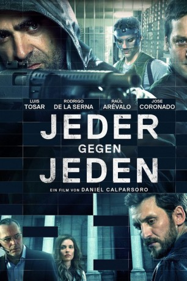
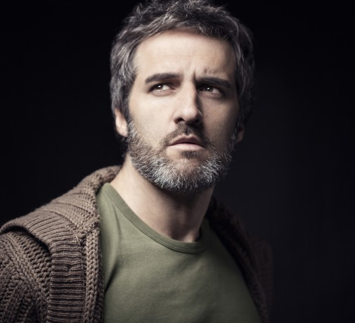
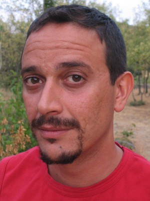

#4832 Jeder gegen jeden
Alternativ: To Steal from a Thief (Englischer Titel)
 
 IMDB-Wertung: 6.3 / 10
IMDB-Wertung: 6.3 / 10  Metascore: 0
Metascore: 0 
Ein Dutzend Geiseln, sechs schwer bewaffnete Gangster und ein Ziel: die am besten geschützten Schließfächer einer Bank in Valencia leerzuräumen und durch einen eigens gegrabenen Tunnel in die Freiheit zu entkommen. Uruguayo und Gallego wollen nicht weniger, als das eine große Ding zu drehen, nach dem sich alle zur Ruhe setzen können. Der unablässige Regen und eine Überschwemmung machen den zunehmend gegeneinander aufgebrachten Männern allerdings einen Strich durch die Rechnung. Ganz zu schweigen, von den Sondereinsatzkommandos, die vor der Bank Stellung bezogen, die aber auch keine Ahnung von dem haben, was sich in den Schließfächern befindet. Das nämlich hat mehr Sprengkraft als die Dynamitwesten, die die Gangster den Geiseln angelegt haben und die bei der kleinsten Berührung einen ganzen Wohnblock in Schutt und Asche legen können ...
Jahr: 2016
Dauer: 97 Minuten
FSK:
Land: Spanien Studio: 20th Century Fox de ArgentinaTonspuren:
Untertitel: Deutsch,
Auflösung: 1080p (1920x808) Größe: 3747 MB
Genre: Krimi, Thriller
Regisseur: Daniel Calparsoro
Drehbuch: Laura Terruso
Soundtrack:
Darsteller:
 Luis Tosar als Gallego
Luis Tosar als Gallego- Rodrigo De la Serna als Uruguayo
- Raúl Arévalo als Ferrán
-  José Coronado als Mellizo
- Luciano Cáceres als Varela
- Marian Álvarez als Cristina
-  Luis Callejo als Domingo
- Miquel Fernández als Julio
- Joaquín Climent als El Puñetas
- Maria Molins als Marina
- Alfredo Villa als Jefe Fuerzas Especiales
- Carles Francino als Locutor radio
- Diego Domínguez als Policía cámara térmica 1
- Patricia Vico als Sandra
- Joaquín Furriel als Loco
- Diego Starosta als Modesto
- Pablo Andrés Pinto als Marco
- Vicente Ayala als Ernesto
- Jaime Linares als José
- Arija Alberto als Mejino
- Sancho Imma als Concha
- José María Tena als Sanz
- Vicente Genovés als Pablo
- Julio Marticorena als Pedro
- Begoña Caparrós Morales als Matilde
- Nani Jiménez als Laura
- Fernando Cueto als Sergio
- Wiso García als Guardia Civil
- Isabel Jiménez als Presentadora TV
- Santi López als Agente equipo
- Ricardo Castro Expósito als Policía Sec. 100
- Sauce Ena als Rehén 1
- Gonzalo Ramos als Vigilante banco 1
- Benjamín González als Vigilante banco 2
- Gervasio Usaj als Cliente
- Jesús Berenguer als Taxista
- Federico Díaz als Policía cámara térmica 2
- Yoska Lázaro als Falso pizzero
- Felipe Cura als Falso policía, G.C.
- Aitor Miguens Tellería als Agente Cuerpos Especiales 1
- Federico Sachs als Agente Cuerpos Especiales 2
- Javier Silva als Agente Cuerpos Especiales 3
- Christian Vera als Agente Cuerpos Especiales 4
- Gonzalo De Otaola Zamora als Policía lancha
- Aaron Navia als Periodista 1
- Fátima L. Méndez Montecino als Periodista 2
- Carmen Domínguez Romero de la Osa als Periodista 3
- María Victoria De Elloca als Doble Sandra
- Javier Guerrico als Doble Soriano
- Héctor Ostrofsky als Doble Mellizo
Datei: X:\2016(G-M)\Jeder gegen jeden (2016, FSK, 1920x808).mkv seit 23.11.2016
Festplatte: HD 2016(A-Z)
 Es gibt insgesamt 164 Filme in der Gruppe '2016(G-M)'
Es gibt insgesamt 164 Filme in der Gruppe '2016(G-M)'